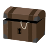
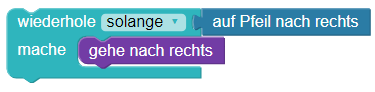

Solange/Bis Schatz
Es soll die Schatztruhe  erreichen. Dafür muss er den Pfeilen folgen.
Bitte schau dir vorab die Erläuterungen der Bausteine unter "weitere Hinweise" an.
Bitte schau dir vorab die Erläuterungen unter "weitere Hinweise" an.
Weitere Hinweise:
Der Baustein wiederhole solange/bis wiederholt etwas solange bzw. bis eine Bedingung erfüllt ist.
Dieser Baustein wird genutzt, wenn man die Anzahl der Wiederholungen im Voraus nicht kennt.

Hier kennst du die Anzahl der Felder zwischen Roboter und Schatztruhe nicht. Hier weißt du nicht, wie viele Pfeile in eine Richtung aufeinander folgen.
Weitere Hinweise:
Während bei der for-Schleife vorher bekannt sein muss, wie oft die Anweisungen wiederholt werden sollen,
kann die while-Schleife genutzt werden, wenn dies vorher nicht bekannt ist.
Die Schleife wird ausgeführt, so lange eine Bedingunge erfüllt ist.
while aufPfeilNachRechts():
rechts()
Hier kennst du die Anzahl der Felder zwischen Roboter und Schatztruhe nicht. Hier weißt du nicht, wie viele Pfeile in eine Richtung aufeinander folgen.